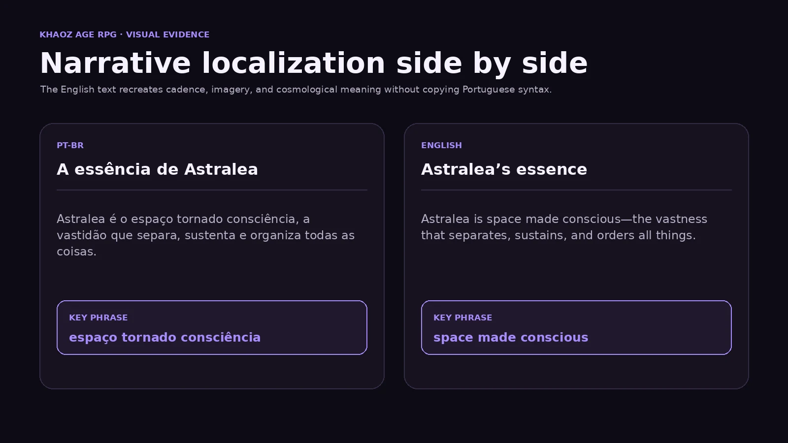
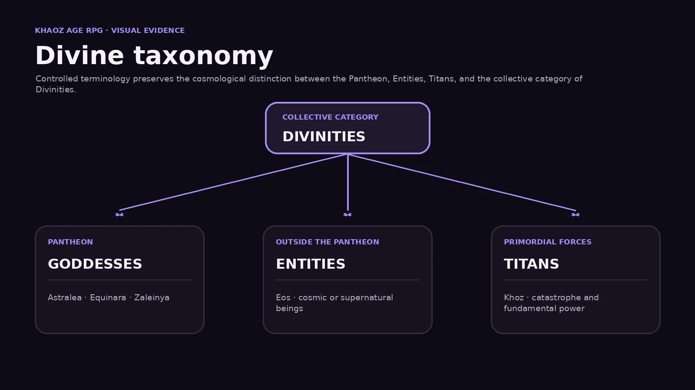

Narrative localization case study
Khaoz Age
RPG
A Brazilian Portuguese-to-English localization study focused on dark fantasy voice, coined terminology, divine taxonomy, naming systems, and consistency across a large fictional universe.
Project overview
A world shaped by creation, ruin, and corruption.
Khaoz Age RPG is an original dark fantasy tabletop setting centred on Sarkan, divine cosmology, ancient catastrophes, unstable magic, and the corruptive influence of khaosite.
Sarkan is influenced by elemental and cosmic forces such as fire, water, air, earth, order, and chaos. These forces may enter mortal reality through planar fractures, arcane experiments, ancient cataclysms, and wounds left by beings from other planes.
The most feared manifestation is khaosite: an unstable purple substance capable of empowering magic while threatening sanity, flesh, and the natural balance of the world.
Visual evidence
Narrative and terminology as connected systems.
Original layouts show source-target prose and the cosmological taxonomy used across the setting.


My role
Localization inside a living worldbuilding system.
My work combines authorship, narrative design, terminology development, translation, documentation, and linguistic QA.
Localization focus
Five systems that must remain connected.
Narrative voice
Preserve a mythic and ominous tone without making the English prose unnecessarily dense.
Coined terminology
Protect world-specific words such as khaosite while explaining them clearly through context.
Divine taxonomy
Maintain the distinction between Goddesses, Entities, Titans, and Divinities.
Titles and epithets
Localize divine titles with consistent rhythm, capitalisation, symbolism, and hierarchy.
Cross-document consistency
Keep names stable across lore, timelines, rules, character options, maps, and campaigns.
Reference usability
Balance literary prose with material that game masters can scan during preparation and play.
Core terminology
A controlled bilingual vocabulary.
The glossary separates proper names, descriptive concepts, branded Khaoz terminology, divine categories, events, and supernatural phenomena.
| PT-BR / Proper name | English | Category | Localization function |
|---|---|---|---|
| Khaoz Age RPG | Khaoz Age RPG | Project title | Retained as the official project and brand name. |
| Sarkan | Sarkan | World | Retained as a proper noun; its meaning is explained in lore. |
| Caos | Chaos | Cosmic force | Standard spelling for the generic force or concept. |
| Khaoz | Khaoz | Branded concept | Retained in setting names, cultic vocabulary, and derived terminology. |
| khaosite | khaosite | Substance | Retained as a coined world-specific material. |
| Anomalia Khaosítica | Khaotic Anomaly | Phenomenon | Uses branded spelling to distinguish it from something merely chaotic. |
| Iminência | Imminence | Rules concept | Measures the growing proximity or severity of an anomaly. |
| Marcador de Iminência | Imminence Marker | Rules component | Tracks escalation towards a catastrophic manifestation. |
| A Ruptura | The Rupture | Historical event | Preserves the scale of the defining cataclysm. |
| Cicatriz de Granador’ah | Scar of Granador’ah | Location / aftermath | Retains the proper name and translates the historical metaphor. |
| Brumas Sussurrantes | Whispering Mists | Permanent anomaly | Preserves personification and unsettling atmosphere. |
| Estreito do Estrondo | Strait of the Thunderclap | Geographic feature | Preserves the dramatic sound image. |
| Joias Sazonais | Seasonal Jewels | Primordial artefacts | Transparent term used across elven cultures. |
| Corte das Sombras | Court of Shadows | Elven court | Natural English fantasy construction. |
| Subterra | Subterra | Region | Retained as a setting-specific geographic name. |
| Panteão | Pantheon | Divine system | Refers specifically to the organised goddesses of Sarkan. |
| Divindade | Divinity | Generic category | Gender-neutral collective term. |
| Deusa | Goddess | Pantheon member | Formal category for members of Sarkan’s Pantheon. |
| Entidade | Entity | Cosmic being | Used for supernatural beings outside the Pantheon. |
| Titã | Titan | Primordial being | Used for powerful non-pantheon forces. |
| Domínio | Domain | Divine concept | Standard mythological and RPG terminology. |
| Eos, o Vazio | Eos, the Void | Primordial entity | Retains the name and translates the defining epithet. |
| Astralea, deusa do Espaço | Astralea, Goddess of Space | Primordial goddess | Retains the name and translates category and domain. |
| Senhora do Infinito | Lady of the Infinite | Divine epithet | Preserves authority and cosmic scale. |
| Protetora das Galáxias | Protector of the Galaxies | Divine epithet | Clear functional title for lore and reference entries. |
| Mãe das Estrelas | Mother of Stars | Divine epithet | Uses a stronger mythic English cadence. |
Terminology architecture
Four rules protect the setting’s identity.
Proper nouns retained
Sarkan, Khoz, Eos, Astralea, Granador’ah, Subterra
Identity-bearing names remain unchanged and are explained through context.
Descriptions localized
Whispering Mists, Seasonal Jewels, Court of Shadows, The Rupture
Descriptive terms are translated when their meaning supports immediate comprehension.
Khaoz spelling controlled
chaos / chaotic remain generic. Khaoz / Khaotic identify branded concepts.
The visual identity is preserved without distorting ordinary English.
Divine categories separated
Goddess, Entity, Titan, Divinity
Each term carries a different cosmological and organisational meaning.
Key decisions
Selected terms and rejected alternatives.
The case study documents not only what was chosen, but why nearby options were rejected.
khaosite → khaosite
Selected: khaositeAlternatives: chaos crystal, khaoz crystal, chaosite, khaozite.
The coined term protects the material’s cultural and narrative identity instead of reducing it to a descriptive object.
Anomalia Khaosítica
Selected: Khaotic AnomalyAlternatives: Chaotic Anomaly, Khaositic Anomaly, Khaoz Anomaly.
The selected form marks a setting-specific phenomenon without implying that every anomaly is a direct crystalline manifestation.
Brumas Sussurrantes
Selected: Whispering MistsAlternatives: Whispering Fogs, Murmuring Mists, The Whispering Veil.
Mists preserves the atmosphere, while Whispering maintains the unsettling possibility that the phenomenon is addressing travellers.
A Ruptura
Selected: The RuptureAlternatives: The Fracture, The Sundering, The Breach.
The Rupture is severe, direct, and suitable for both a historical cataclysm and a wound in reality.
Eos, o Vazio
Selected: Eos, the VoidAlternatives: Void Incarnate, the Emptiness, the Abyss.
The Void preserves Eos as both a being and the primordial absence from which existence emerged.
Astralea, deusa do Espaço
Selected: Astralea, Goddess of SpaceAlternatives: Goddess of the Cosmos, Lady of Space, Goddess of the Firmament.
Goddess of Space precisely names the primordial domain and supports consistent divine-entry headings.
Mãe das Estrelas
Selected: Mother of StarsAlternatives: Mother of the Stars, Star Mother, The Stellar Mother.
Removing the article creates a stronger archetypal and mythic cadence.
Divine taxonomy
Goddess · Entity · Titan · DivinityThe English terminology preserves the formal cosmological distinction instead of using god as a universal label.
Narrative examples
From source lore to player-facing English.
Introducing Sarkan
Shaped by creates more natural English worldbuilding prose while preserving the three-part rhythm.
The contradiction of khaosite
Flesh strengthens the dark fantasy register while the temptation-versus-corruption contrast remains intact.
Eos and the primordial myth
The translation preserves ceremonial cadence and the paradoxical image of the Void becoming embodied.
Astralea’s essence
Orders carries both organisational and divine-authority meanings.
Astralea’s doctrine
The line retains Astralea’s cold authority and reinforces her connection to order, containment, and cosmic balance.
The Whispering Mists
Defined setting terms remain capitalised, while the geography follows natural English word order.
Voice and style
Mythic, ominous, and usable at the table.
Narrative register
Mythic but not archaic; ominous without excessive ornamentation; precise when describing cosmology and mechanics.
Sentence rhythm
Lore introductions may use ceremonial cadence. Rules, hooks, and reference entries use shorter, scan-friendly structures.
Capitalisation
Named events, formal categories, defined phenomena, domains, and epithets follow controlled capitalisation.
Proper names
Apostrophes, diacritics, and coined spellings remain intact when they are part of cultural or narrative identity.
Constraints
Localization decisions shaped by a large universe.
| Constraint | Localization response |
|---|---|
| Large interconnected setting | Maintain a controlled glossary for titles, places, cultures, events, and divine categories. |
| Mythic Portuguese prose | Recreate cadence and symbolism rather than translating syntax mechanically. |
| Extensive coined vocabulary | Retain proper nouns and branded terms while documenting meaning separately. |
| Generic and branded concepts overlap | Distinguish chaos / chaotic from Khaoz / Khaotic. |
| Multiple divine categories | Use Goddess, Entity, Titan, and Divinity according to cosmological function. |
| Wiki and campaign-book use | Balance literary voice with scan-friendly summaries and reference tables. |
| Long-term expansion | Record approved terms, rejected alternatives, and cross-references under version control. |
Quality assurance
Narrative, terminological, and structural review.
Completed checks
- Proper names remain consistent
- Chaos is distinguished from Khaoz terminology
- Divine categories preserve lore hierarchy
- Titles and epithets follow consistent capitalisation
- Historical events use stable English names
- Narrative tone is preserved without copying Portuguese syntax
- Apostrophes and diacritics remain intact
- English prose is readable aloud at the table
Further review
- Create a pronunciation guide for coined names
- Standardise every divine epithet
- Review Khaotic versus Khaositic in legacy documents
- Complete the English timeline
- Localise one full culture or lineage entry
- Test lore excerpts with English-speaking game masters
Tools and workflow
Documented across creative and technical systems.
Outcome
A scalable English framework for Sarkan.
The localization framework supports world and region articles, cosmology, divine profiles, Titans, Entities, character options, timelines, campaign guides, adventure hooks, bestiary entries, and mechanics involving khaosite and Khaotic Anomalies.
The case study demonstrates how narrative localization, terminology management, and worldbuilding design intersect across a large fictional universe.
Project documentation
Review the technical files behind Khaoz Age RPG.
The public repository contains the Markdown case study, bilingual terminology documentation, and the structure used to maintain localization decisions.